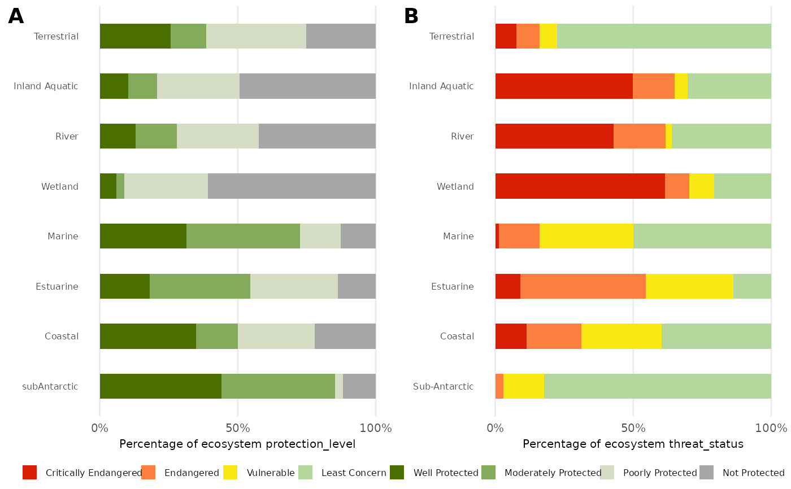

A function to plot multiple plots created by the NBA_plot function in one grid.
Usage
NBA_plot_comb(
DF,
GROUPS,
METRIC_COL,
METRICS,
COLS,
CHRT = c("bar", "donut"),
NUM = FALSE,
LAB,
GRP = TRUE,
SAVE = NULL
)Arguments
- DF
The data frame that contains the information
- GROUPS
The categorized variables (ecosystem functional group, taxa, etc)
- METRIC_COL
The column that differentiates which rows belong to which plots
- METRICS
a list of the identifiers for each plot
- COLS
The categories to describe the variables (protection level, threat status, condition, etc). You can use any tidyselect method to select these columns e.g. 2:4/ Endangered:Vulnerable/ c(Well Protected,Moderately Protected,Poorly Protected,Not Protected) etc
- CHRT
A choice of either "bar" or "donut" plot
- NUM
A choice to show numbers in the plot, False to show no numbers
- LAB
The x axis label of the plot
- GRP
A choice of whether or not to plot the donut graphs by group, TRUE will plot a donut plot for each group.
- SAVE
The name of the output file that will be saved to the output folder. If you do not have an outputs folder you will be prompted to make one.
Details
The function expects that the groups are in a column, with one group per row, and the protection level, threat status, or condition categories are the headings of each column as well as a column to identify which rows should be plotted together (i.e which rows represent extent and which represent number). Please look at the example data NBA_example_comb_data to see the correct structure for the data. Please note that whether it will be used to make a bar or donut plot is irrelevant.
The name of the groups column is irrelevant, but the categories must be spelled correctly (there is a list of the standard spellings/ cases of NBA categories named NBA_categories in this package, which can be accessed for reference).
The nameing of the plots is automatically alphabetical and lower case. The ordering of the plots is also automatic. The legend is assumed to be the same and added to the bottom of the plots.
Examples
bar_plot_comb <- NBA_plot_comb(
NBA_example_comb_data,
GROUPS= `OVERALL types`,
METRIC_COL = metric,
METRICS = c("protection_level", "threat_status"),
COLS = 3:10,
CHRT = "bar",
NUM = FALSE,
LAB = "Percentage of ecosystem",
SAVE=NULL)
#> Warning: Removed 32 rows containing missing values or values outside the scale range
#> (`geom_bar()`).
#> Warning: Removed 32 rows containing missing values or values outside the scale range
#> (`geom_bar()`).
#> Warning: Removed 32 rows containing missing values or values outside the scale range
#> (`geom_bar()`).
bar_plot_comb

#